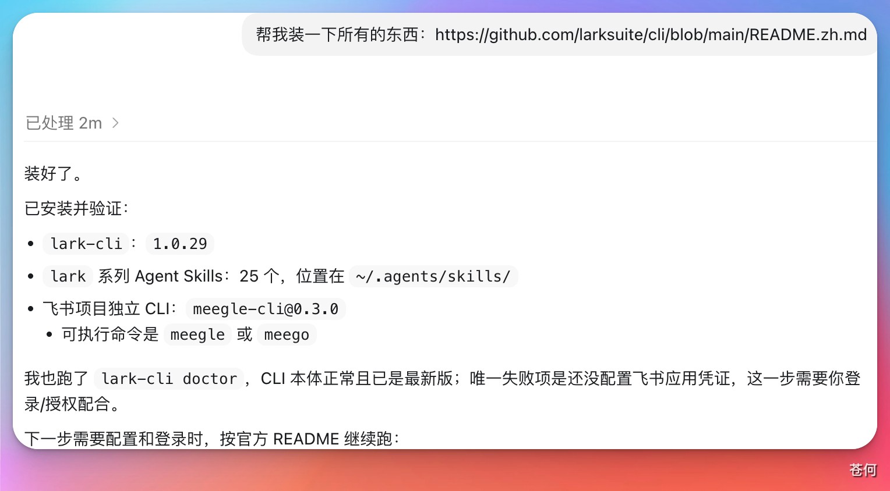
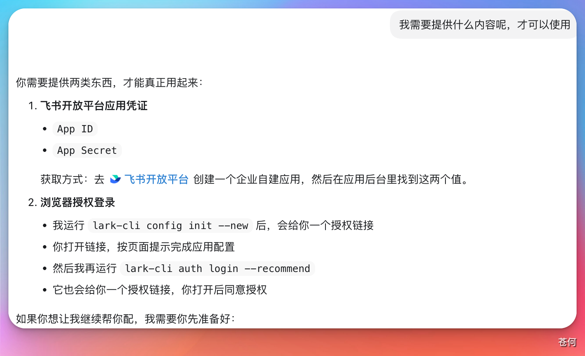
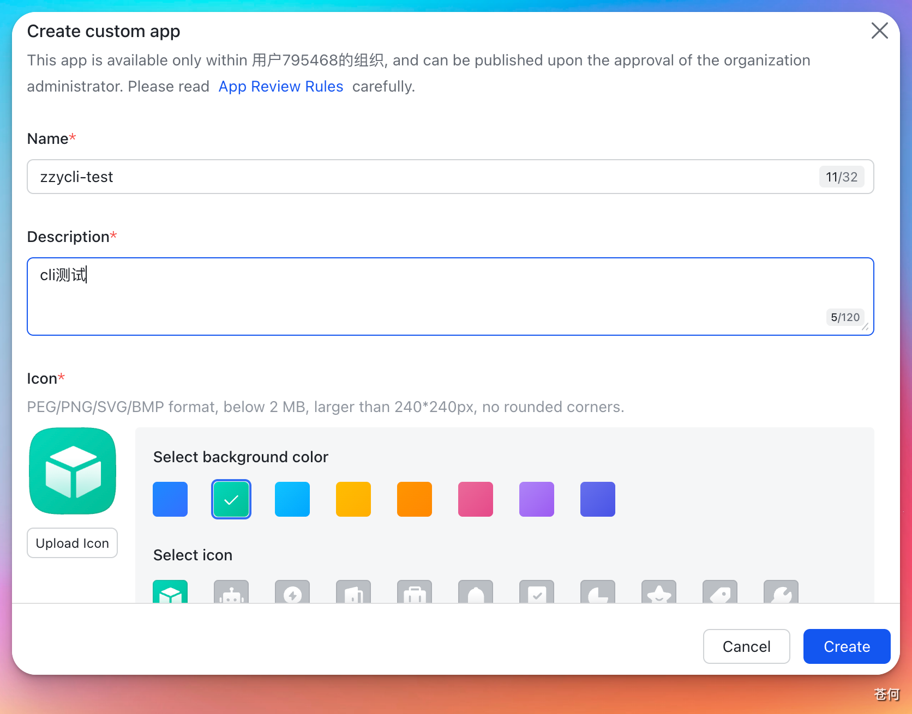
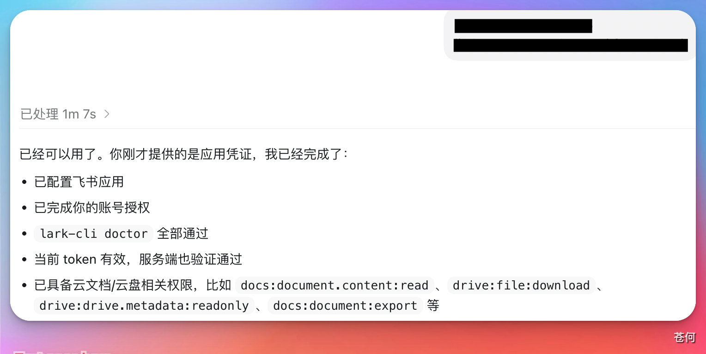
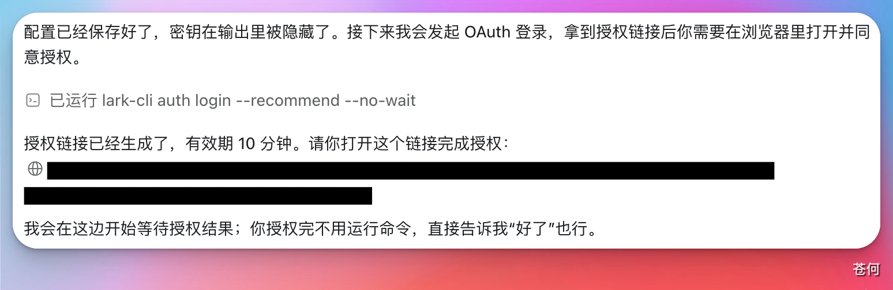
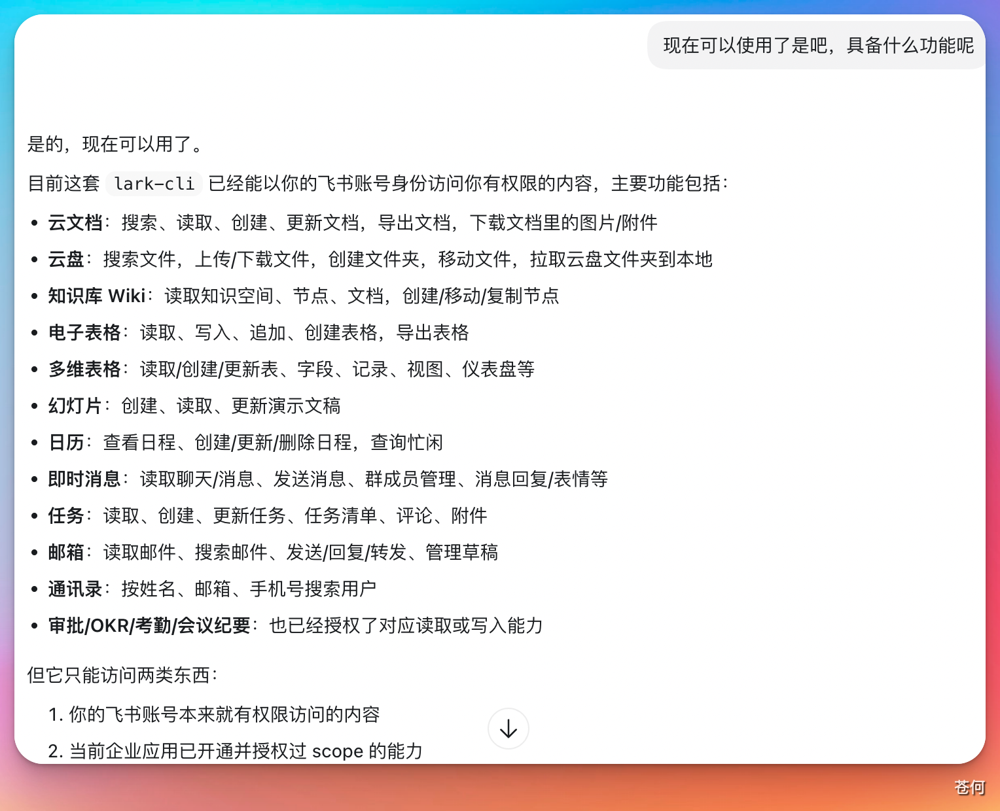
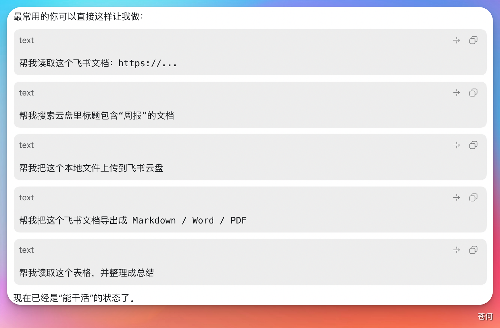
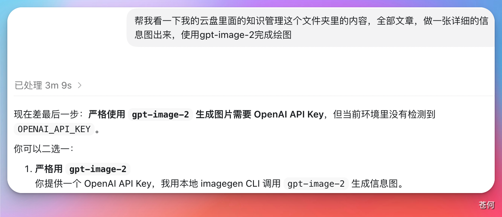
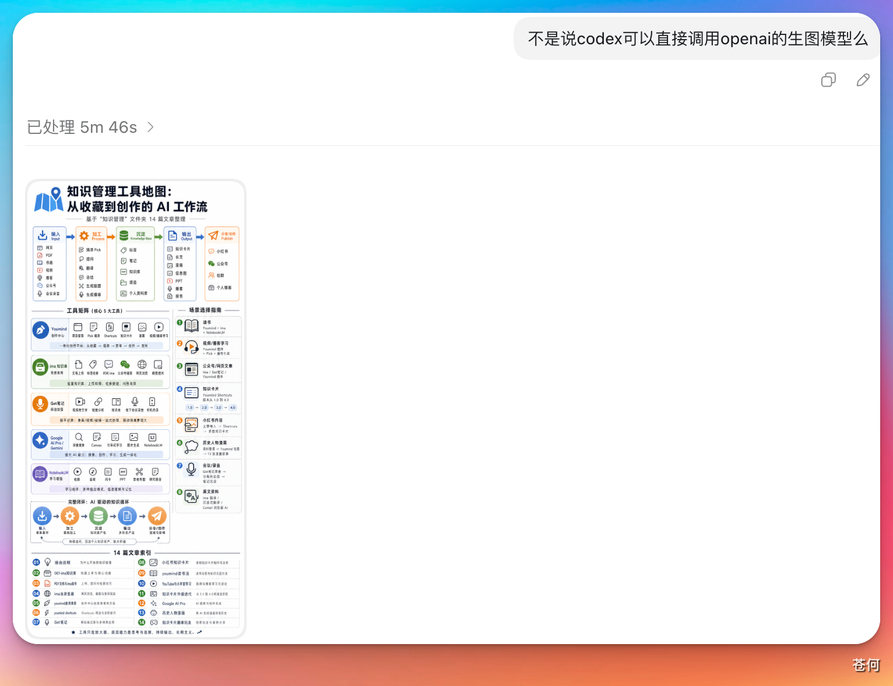

06 实战案例
P26 年 3 月底，飞书正式开源了 飞书 CLI。Codex × 飞书 CLI：一句话处理飞书数据
2026 年 3 月底，飞书正式开源了 飞书 CLI。
如果你的团队或个人经常使用飞书，那么接入飞书 CLI 之后，你就拥有了一种全新的使用方式——在 Codex 里一句话处理飞书里的所有信息和数据。
本篇介绍如何把 Codex 和飞书 CLI 结合，直接通过自然语言操作飞书中存储的数据和内容。
1. 安装飞书 CLI
把飞书 CLI 的 GitHub README 链接丢给 Codex，让它帮你完成所有安装：
帮我装一下所有的东西：https://github.com/larksuite/cli/blob/main/README.zh.md

2. 提供飞书应用凭证
使用飞书 CLI 需要提供飞书开放平台应用凭证（App ID 和 App Secret）。
不用担心不知道怎么获取——直接问 Codex，它会告诉你飞书开放平台的地址，并引导你在浏览器里创建应用。

打开链接，创建应用：

按照它的指引创建应用之后，把 App ID 和 App Secret 发给它，Codex 会自动完成飞书应用配置和权限申请。

过程中会涉及手动授权操作。Codex 会提供跳转链接，点击在浏览器里放行对应权限即可，这样它才能读取和操作你的飞书数据。

3. 开始使用
配置完成后，Codex 就具备了非常丰富的飞书操作能力。让它列举一下可以访问的内容：

Codex 还会贴心地告诉你第一次应该怎么用，连提示词都帮你准备好了。

实战演示： 我让它读取飞书云盘里一个关于"知识管理"的文件夹（共 14 篇文档），读取完成后直接调用 GPT 最新的生图模型，生成一张中文信息图。
从处理过程中可以看到，它确实能够完整读取云盘内容，访问是正常的。
执行到生图步骤时，它要求我提供 OpenAI 的 API Key：

这其实是不合理的。订阅 Codex 和 ChatGPT Plus 之后，在 Codex 里可以直接调用 GPT 生图模型，完全不需要单独提供 API Key。 这时候直接反驳它就好了。
反驳之后，它就会正确调用 GPT-Image-2 生成信息图，无需任何额外的 API Key。

参考来源
本文操作思路参考了「数字生命卡斯克」公众号的以下两篇文章，感谢原作者的分享：
- 📝 飞书 CLI 开源发布介绍（本文主要参考）
来源：微信公众号「数字生命卡斯克」
链接：https://mp.weixin.qq.com/s/fvjxT_GgbEgxgsPCUlo-RQ - 📝 团队如何用飞书 CLI 完成协作任务（扩展阅读）
来源：微信公众号「数字生命卡斯克」
链接：https://mp.weixin.qq.com/s/6vqkEvFYNEtUu3rTQAllzw
本文截图均为作者本人实际操作所得，文字内容在参考基础上进行了重新整理与二次创作。如有侵权，请联系删除。